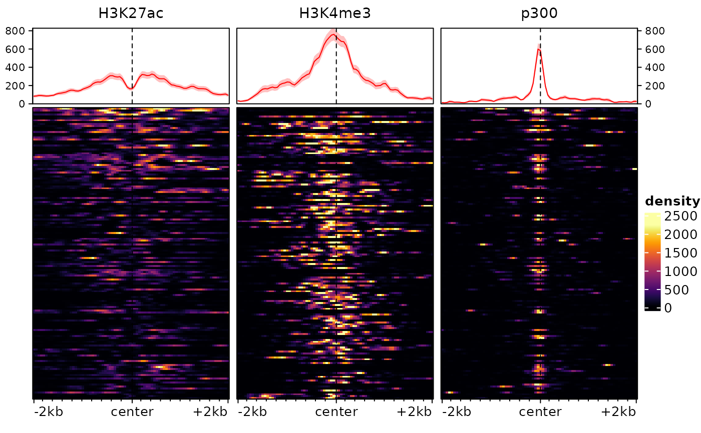

plotEnrichedHeatmaps: Plots heatmaps of signals around a set of regions
plotEnrichedHeatmaps.RdPlots enrichment heatmaps from the output of signal2Matrix
(i.e. an EnrichmentSE object or a list of signal matrices). This is a
convenience wrapper around EnrichedHeatmap.
Usage
plotEnrichedHeatmaps(
ml,
trim = c(0.02, 0.98),
assay = 1L,
colors = NULL,
scale_title = "density",
column_title = NULL,
multiScale = NULL,
column_title_gp = gpar(fontsize = 11),
row_order = NULL,
cluster_rows = FALSE,
row_split = NULL,
axis_name = NULL,
minRowVal = 0,
scale_rows = FALSE,
top_annotation = TRUE,
left_annotation = NULL,
right_annotation = NULL,
mean_color = "red",
mean_scale_side = NULL,
mean_trim = TRUE,
show_heatmap_legend = TRUE,
use_raster = NULL,
...
)Arguments
- ml
A named matrix list as produced by
signal2Matrix, or an `EnrichmentSE` object.- trim
The quantile above which to trim values for the colorscale. If a numeric vector of length 2, will be used as lower and upper quantiles beyond which to trim.
- assay
Assay to use (ignored unless `ml` is an ESE object)
- colors
The heatmap colors to use, a vector of at least two colors between which to interpolate. Can also be a list of such color scales, with as many slots as there are tracks in `ml`. If a list of single colors, a color scale from white to that color will be used for each track. Defaults to the 'inferno' viridis palette.
- scale_title
The title of the scale. Ignored if `multiScale=TRUE`.
- multiScale
Logical; whether to use a different scale for each track. Defaults to TRUE is `colors` is a list, otherwise FALSE.
- column_title_gp
Graphic parameters of the column titles (see
gpar)- row_order
Optional order of the rows.
- cluster_rows
Logical; whether to cluster rows. Alternatively, `cluster_rows="sort"` will sort rows using the angle on an MDS based on the
enriched_scoreof the signals (can be very long to compute on large matrices). `cluster_rows=FALSE` (default) results in the traditional sorting by decreasing `enriched_score`.- row_split
Variable according to which the rows should be split. This should either be the name of a column of `rowData(ml)`, or a factor/ character vector of length equal to the number of regions in `ml`.
- axis_name
A vector of length 3 giving the labels to put respectively on the left, center and right of the x axis of each heatmap.
- minRowVal
Minimum value a row should have to be included
- scale_rows
Whether to scale rows, either FALSE (default), 'local' (scales each matrix separately) or 'global'.
- top_annotation
Either a logical indicating whether or not to plot the summary profile at the top of each heatmap, a named list of parameters to be passed to `anno_enrich`, or a
HeatmapAnnotation-classobject that will be passed toEnrichedHeatmap. Additionally, if `ml` is a `ESE` object, `top_annotation` can be a vector of colData column names.- left_annotation
Passed to
EnrichedHeatmap- right_annotation
Passed to
EnrichedHeatmap- mean_color
Color of the mean signal line in the top annotation. If `row_split` is used, `mean_color` can be a named vector indicating the colors for each cluster. Can also be a `gpar` object.
- mean_scale_side
The side on which to show the y-axis scale of the mean plots. Either "both" (default), "left", "right", or "none".
- mean_trim
Logical; whether to apply the trimming also to the mean plot.
- show_heatmap_legend
Logical, whether to show the heatmap legend
- use_raster
Logical; whether to render the heatmap body as a raster image. Turned on by default if any of the matrix dimensions is greater than 1500.
- ...
Passed to
EnrichedHeatmap
Details
When plotting large matrices, the heatmap body will be rasterized to keep its memory footprint decent. For this to work well, make sure the `magick` package is installed. Depending on your settings, if the heatmap is very big you might hit the preset limits of `magick` base rasterization, which could result in an error such as 'Image must have at least 1 frame to write a bitmap'. In such cases, you might have to degrade to a lower-quality rasterization using the additional arguments `raster_by_magick=FALSE, raster_device="CairoJPEG"` . Alternatively, the best solution is to increase the size and memory limits in the `policy.xml` configuration of the underlying (non-R) imagemagick library.
Examples
# we first load an example EnrichmentSE, as produced by signal2Matrix:
data(exampleESE)
plotEnrichedHeatmaps(exampleESE)

# we could also just plot one with:
# plotEnrichedHeatmaps(exampleESEm[,1])
# or change the aesthetics, e.g.:
plotEnrichedHeatmaps(exampleESE, trim=0.98, scale_title="RPKM",
colors=c("white","darkred"), row_title="My regions")
 # any argument accepted by `EnrichedHeatmap` (and hence by
# `ComplexHeatmap::Heatmap`) can be used.
# any argument accepted by `EnrichedHeatmap` (and hence by
# `ComplexHeatmap::Heatmap`) can be used.